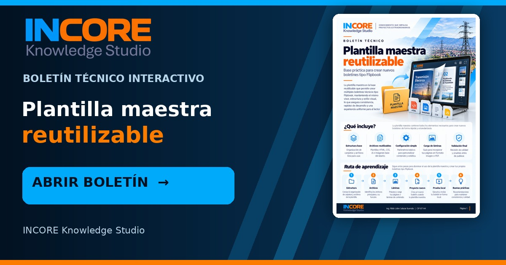

Plantilla maestra reutilizable
Abriendo el boletín interactivo… Si no se abre automáticamente, pulsa la portada o el botón.
Abrir boletín
Abriendo el boletín interactivo… Si no se abre automáticamente, pulsa la portada o el botón.
Abrir boletín